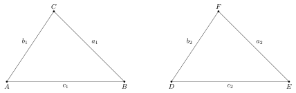
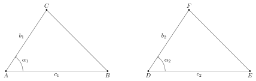
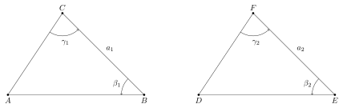
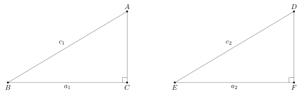
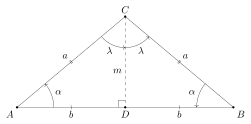
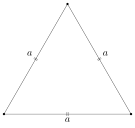

Eclats de vers : Matemat : Triangles isométriques
Table des matières
1. Conditions d’isométrie de deux triangles
1.1. Principe d’équivalence des constructions
Chacune des techniques de construction de triangles que nous avons présenté jusqu’ici produit, soit un unique triangle, soit deux triangles isométriques.
Étant donné une technique de construction \(\mathscr{T}\) et ses données de départ \(\mathscr{D}\), les longueurs et les angles des triangles obtenus sont donc identiques, et ce quel que soit l’endroit et l’orientation des éléments de départ de la construction.
Si deux triangles \(T_1\) et \(T_2\) partagent les mêmes caractéristiques \(\mathscr{D}\), on peut les reconstruire à l’identique au moyen de \(\mathscr{T}\). On en déduit que ces deux triangles sont isométriques :
\[ T_1 \cong T_2 \]
Les longueurs et leurs angles de ces triangles sont donc complètement déterminés par les caractéristiques de \(\mathscr{D}\).
1.2. Triangles quelconques
1.2.1. Trois côtés de même longueur
Soit les deux triangles \(ABC\) et \(DEF\) présentés dans le schéma ci-dessous :

Si les trois côtés sont de mêmes longueurs :
\[ a_1 = a_2 \]
\[ b_1 = b_2 \]
\[ c_1 = c_2 \]
on peut utiliser la même technique pour reconstruire les deux triangles à l’identique. On en déduit que les deux triangles sont isométriques.
1.2.2. Côté - angle - côté
Soit les deux triangles \(ABC\) et \(DEF\) présentés dans le schéma ci-dessous :

Si les deux triangles ont un angle correspondant de même amplitude compris entre deux côtés correspondants de mêmes longueurs :
\[ \alpha_1 = \alpha_2 \]
\[ b_1 = b_2 \]
\[ c_1 = c_2 \]
on peut utiliser la même technique pour reconstruire les deux triangles à l’identique. On en déduit que les deux triangles sont isométriques.
1.2.3. Angle - côté - angle
Soit les deux triangles \(ABC\) et \(DEF\) présentés dans le schéma ci-dessous :

Si les deux triangles ont un côté correspondant de même longueur compris entre deux angles correspondants de mêmes amplitudes :
\[ a_1 = a_2 \]
\[ \beta_1 = \beta_2 \]
\[ \gamma_1 = \gamma_2 \]
on peut utiliser la même technique pour reconstruire les deux triangles à l’identique. On en déduit que les deux triangles sont isométriques.
1.3. Triangles rectangles
1.3.1. Deux cathètes
Soit les deux triangles rectangles \(ABC\) et \(DEF\) présentés dans le schéma ci-dessous :

Si les deux triangles rectangles ont leurs deux cathètes de même longueur :
\[ a_1 = a_2 \]
\[ b_1 = b_2 \]
on peut utiliser la même technique pour reconstruire les deux triangles à l’identique. On en déduit que les deux triangles sont isométriques.
1.3.2. Cathète et hypothénuse
Soit les deux triangles rectangles \(ABC\) et \(DEF\) présentés dans le schéma ci-dessous :

Si les deux triangles rectangles ont une cathète et l’hypothénuse de mêmes longueurs :
\[ a_1 = a_2 \]
\[ c_1 = c_2 \]
on peut utiliser la même technique pour reconstruire les deux triangles à l’identique. On en déduit que les deux triangles sont isométriques.
1.3.3. Cathéte et angle adjacent
Soit les deux triangles rectangles \(ABC\) et \(DEF\) présentés dans le schéma ci-dessous :
Si les deux triangles rectangles ont une cathète de même longueur adjacente à un angle de même amplitude :
\[ a_1 = a_2 \]
\[ \beta_1 = \beta_2 \]
on peut utiliser la même technique pour reconstruire les deux triangles à l’identique. On en déduit que les deux triangles sont isométriques.
1.3.4. Cathéte et angle non adjacent
Soit les deux triangles rectangles \(ABC\) et \(DEF\) présentés dans le schéma ci-dessous :
Si les deux triangles rectangles ont une cathète de même longueur qui n’est pas adjacente à un angle de même amplitude :
\[ a_1 = a_2 \]
\[ \alpha_1 = \alpha_2 \]
on peut utiliser la même technique pour reconstruire les deux triangles à l’identique. On en déduit que les deux triangles sont isométriques.
1.3.5. Hypothénuse et angle
Soit les deux triangles rectangles \(ABC\) et \(DEF\) présentés dans le schéma ci-dessous :
Si les deux triangles rectangles ont leur hypothénuse de même longueur et un angle d’amplitude identique :
\[ c_1 = c_2 \]
\[ \alpha_1 = \alpha_2 \]
on peut utiliser la même technique pour reconstruire les deux triangles à l’identique. On en déduit que les deux triangles sont isométriques.
2. Triangle isocèle
2.1. Angles et médiane
Le schéma ci-dessous représente un triangle isocèle et la médiane qui part du sommet adjacent aux côtés de longueurs égales :
Par définition du triangle isocèle, on a :
\[ a = \abs{AC} = \abs{BC} \]
Par définition de la médiane, on a :
\[ b = \abs{AD} = \abs{DB} \]
On voit que les triangles \(ADC\) et \(DBC\) ont leurs trois côtés de mêmes longueurs. Ils sont donc isométriques, ce qui signifie que leurs angles sont de mêmes amplitudes. On a en particulier :
\[ \alpha = \beta \]
\[ \gamma = \delta \]
\[ \lambda = \mu \]
Comme les points \(A\), \(D\) et \(C\) sont alignés, \(\gamma\) et \(\delta\) forment ensemble un angle plat :
\[ \gamma + \delta = 180^\circ \]
On en conclut que :
\[ 2 \ \gamma = 180^\circ \]
c’est-à-dire :
\[ \gamma = 90^\circ \]
On a donc finalement le schéma suivant :

On voit que :
- les deux angles adjacents à \([A,B]\) sont égaux
- la médiane \(m\) est aussi une hauteur du triangle \(ABC\), et la bissectrice de \(\angleflex{ACB}\)
2.2. Condition suffisante
3. Triangle équilatéral
3.1. Angles
Le schéma ci-dessous représente un triangle équilatéral \(ABC\) avec ses trois angles :

Comme \(ABC\) est un cas particulier de triangle isocèle en \([A,C]\) et \([B,C]\), les angles associés doivent être égaux :
\[ \alpha = \beta \]
Comme \(ABC\) est un cas particulier de triangle isocèle en \([A,C]\) et \([A,B]\), les angles associés doivent être égaux :
\[ \alpha = \gamma \]
Les trois angles sont donc identiques :
\[ \alpha = \beta = \gamma \]
La somme des angles de ce triangle nous donne :
\[ \alpha + \beta + \gamma = 3 \ \alpha = 180^\circ \]
On a donc :
\[ \alpha = \frac{180^\circ}{3} = 60^\circ \]
Les angles d’un triangle équilatéral ont tous une amplitude de 60°.